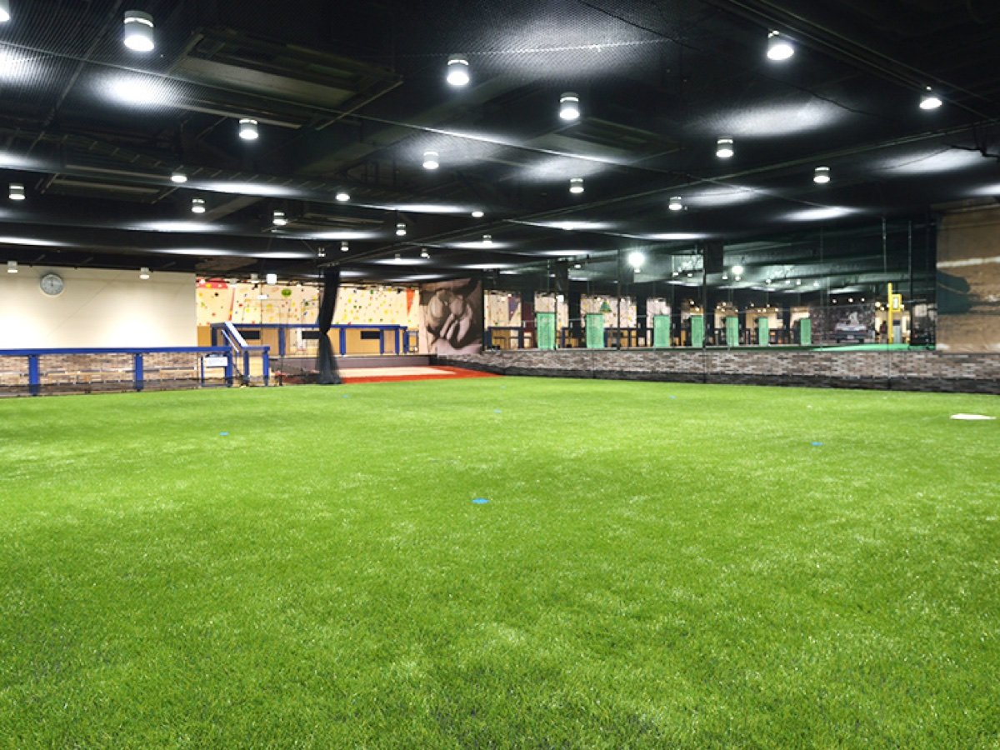
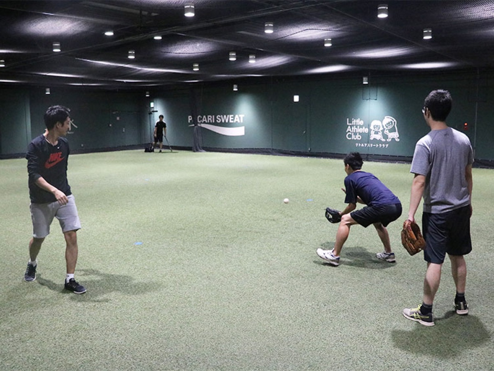

今季成績
Community Baseball Club
次の一球で、 流れを変える。
試合日程、出場メンバー、直近の試合結果をひとつにまとめた チーム運営用ホームページ。
勝率
登録メンバー
今後30日の予定
Schedule
試合・練習日程
| 日付 | 種別 | 場所 | 時間帯 | 相手/内容 |
|---|
Google Calendar
確定日程
読み込み中...
Attendance
練習日調整
Practice Availability
練習日程調整
読み込み中...
Scorebook
オーダー・成績管理
Leaders
チーム成績
打率 TOP5
AB 1+| # | 選手 | AVG | H/AB | HR |
|---|
防御率 TOP5
OUT 1+| # | 投手 | ERA | IP | K |
|---|
最近の登録試合
0件Roster
メンバー一覧
Home Ground
メイングラウンド
Main Field
錦糸公園野球場
墨田区・錦糸町エリアを拠点に活動。 ホームゲームと練習の中心グラウンドとして利用します。
墨田区公式ページを見る野球場A面・B面
条件付き予約開始
一般貸出の基本単位


Practice Field Image
スポドリ！ レンタルフィールド
6/28の練習予定に合わせて、後楽園の屋内フィールドも練習場イメージとして掲載。 人工芝の広いスペースで、守備・投球・基礎練を組みやすい環境です。
屋内
約340m²
東京ドームシティ
スポドリ公式ページを見る
Results
試合結果
Contact
試合希望
Game Request
対戦のお誘いはこちらまで
練習試合・合同練習のご相談は、LINEからお気軽にご連絡ください。
LINEで相談 @302cjonf